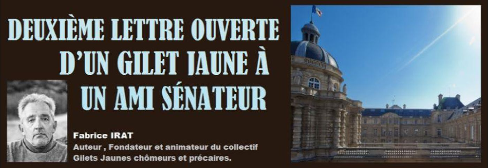
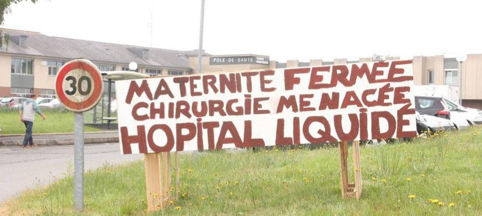
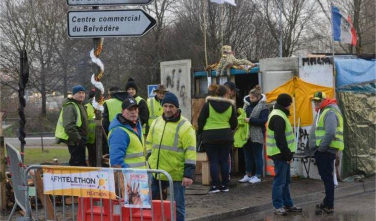
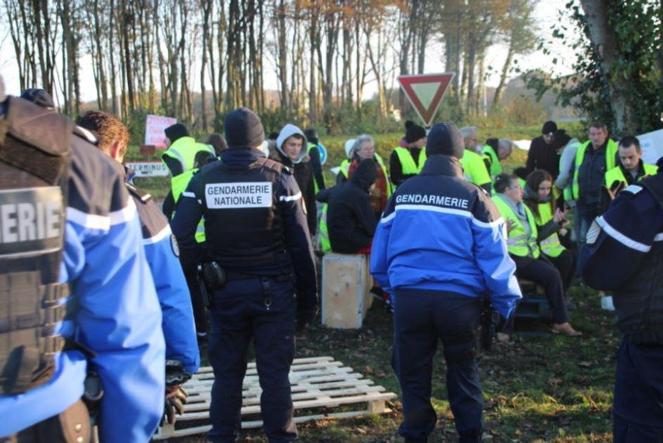

Deuxième lettre ouverte d’un gilet jaune à un ami sénateur
par Fabrice IRAT

Monsieur le Sénateur et néanmoins ami,
Alors que le printemps s’installe, on constate que les chevau-légers de la Macronie sont moins fringants qu’il y a deux ans, quand Manu montait irrésistiblement vers le Pouvoir.
Hier soir je t’ai vu discourir sur le plateau de Ruth Elkrief : la restitution du « grand débat » promet « de belles surprises », le Chef de l’État est « pleinement mobilisé » pour « répondre aux inquiétudes du pays. » Le propos était assuré, les éléments de langage défilaient sans encombre. « Il n’y aura pas de France forte sans Europe forte », assénais-tu encore dans un élan exalté de mauvais théâtre. Mais on sentait une lassitude, l’exercice contraint de Grand Oral poussiéreux. Tu es fatigué.
C’est vrai que pour la majorité présidentielle rien ne se passe comme prévu : les gilets jaunes abordent leur sixième mois de mobilisation et leur « essoufflement » est une de ses fictions grotesques que ton gouvernement, semaine après semaine, alimente sans que plus personne n’y croit. Vous pensiez que la privatisation d’AdP, d’Engie, de la Française des Jeux, des barrages (j’en oublie) passerait dans le catimini des séances de fin de nuit à l’Assemblée, mais c’est raté : les français ne veulent pas que le bien commun soit vendu. Il y a la pétaudière de la réforme des retraites. Il y a le sursaut légaliste d’institutions que vous aviez un peu trop sous-estimées : le Sénat et l’affaire Benalla ; le Conseil Constitutionnel et la loi « anticasseurs ».
Pas un jour ne passe sans qu’un début de scandale, une foirade d’État, une statistique désastreuse ne viennent un peu plus assombrir l’horizon du quinquennat. Les médias amis (d’aucuns diraient aux ordres) auront beau gloser sur les courbes de popularité en hausse, lesdites courbes restent désespérément basses. Et donc au-delà du verbiage des communicants et du storytelling des thuriféraires il y a cette réalité brutale : les Français ne veulent plus de Macron, les Français ne veulent plus de vous.
Sur le terrain tu as forcément constaté cette hostilité. Non pas de la part du citoyen de base, que tu fréquentes peu, mais de la part des élus locaux. Le nombre de maires ayant démissionné depuis 2014 a augmenté de 55 %. Alors certes c’était avant Macron, c’était sous Hollande, ton précédent maître à poncer. Mais le mouvement s’accélère : dotations supprimées, services publics fermés, routes délabrées et transformées en usines à rackets (les 80 km/h, les radars), la liste est longue des potions amères que la Macronie administre à la France profonde, écœurant chaque jour un peu plus les édiles.
Est-ce que tout cela t’inquiète ? Ce n’est pas certain. Un élu de mes amis me reporte que lors de tes réunions de « proximité » tu régurgites la rhétorique officielle : on baisse ou supprime les dotations pour « redéployer » le budget de l’État, on supprime les services publics pour faire de meilleurs services publics, on va faire mieux avec moins, c’est la Révision Générale des Politiques Publiques saison 2, c’est le nouveau monde, vous verrez, ce s’ra bien.
Supprimer des services publics pour mieux servir le public, supprimer des lits d’hôpitaux pour mieux soigner les malades, supprimer des lignes de train pour sauver la SNCF, supprimer des classes pour sauver l’école : on n’en peut plus de votre sémantique du paradoxe.
L’élu de mes amis fait partie de ces maires ruraux pragmatiques, dévoués, raisonnablement centristes, qui vont batailler des heures à la sous-préfecture pour un problème d’adduction d’eau. Il est sur son troisième mandat. Il a toujours voté pour toi. Mais là c’est terminé : il ne votera plus pour toi et ne se représentera pas. Récemment, au village, une jeune femme qui allait accoucher a failli perdre son enfant. Parce que la maternité est désormais au chef-lieu. Et que le chef-lieu est loin. Elle a failli perdre son enfant à cause de la Révision Générale des Politiques Publiques, à cause de ton nouveau monde où règne le flux tendu ultra-libéral ; elle a failli perdre son enfant parce que l’obstétrique n’obéit pas à vos règles où il convient d’accoucher plus loin pour accoucher mieux.
Mon ami va démissionner aussi parce que non contents d’avoir substitué à la parole de l’État la logorrhée du management, vous avez corrompu le vrai sens des mots : des gilets jaunes débonnaires qui s’étaient installés sur le seul rond-point de sa commune, Castaner et toi avez fait des factieux et des ennemis de la République ; de petits retraités, d’artisans durs à la tâche, de smicards surendettés, de chômeurs en fin de droits vous avez fait des délinquants, des casseurs, des xénophobes, des antisémites, des asociaux dangereux qu’il convient de réprimer sans nuances, au besoin en piétinant les libertés publiques, au besoin en faisant voter, au pays des droits de l’homme, des lois d’exception dont la brutalité stupéfie le monde.
Alors, certes, mon ami le Maire centriste n’est pas d’accord avec tout ce que disent les gilets jaunes. Mais il a eu le cœur brisé quand il a fallu qu’il ordonne l’évacuation du rond-point, le démantèlement de la petite cabane où tous se retrouvaient pour boire un verre, rédiger un tract, refaire le monde. Il connait ces artisans, ces retraités, ces smicards, ces chômeurs, nombre d’entre eux votent pour lui.
Il connait ces hommes et ces femmes qui depuis longtemps déjà vivent dans l’immédiate proximité de la misère et pour lesquels il ne peut rien sinon dispenser quelques mots de réconfort et évoquer, sans plus y croire, une énième demande d’aide aux services sociaux. Il a dû, sur ordre du Préfet de ta République, les faire évacuer du rond-point. Tous. Il a eu le cœur brisé
Il n’est pas jusqu’aux gendarmes qui n’aient été troublés par la situation. Ici nous sommes loin du zèle de la BAC et des alignements intimidants des CRS. Ici c’est la campagne, l’ordinaire ce sont les voleurs de poule et les types qui conduisent bourrés. Faudra-t-il brutaliser la mamie qui habite près de l’église, gazer le Président du club de foot ? Tout ça pour l’occupation d’un rond-point et une cabane branlante ? « Gendarmerie, une force humaine », qu’ils disaient ! On n’a pas signé pour ça !
Monsieur le Sénateur, la prochaine fois que tu croiseras ces gendarmes, au monument aux morts ou à une passation de sous-préfet, évite de les regarder dans les yeux, tu y verras le mépris et la colère. Le mépris et la colère de gens du peuple requis pour la défense d’un ordre qui n’est pas le leur.
Ta république, ton ordre ? Ils sont là, tout entier, dans la liste LREM pour les élections européennes : des notables branchés, des lobbyistes, des conseillers parlementaires, des journalistes mainstream ; des DRH qui, aux travailleurs précaires et aux chômeurs dans l’impasse, parlent de « plans de sauvegarde de l’emploi » et de « loi sur la liberté de choisir son avenir professionnel » (toujours la sémantique du paradoxe). Sans parler des écolos de confort qui font profession de sauver la planète mais se refusent à l’interdiction du glyphosate au nom du pragmatisme économique, au nom de ce « en même temps » qui se révèle de plus en plus un « ni l’un ni l’autre ».
Votre liste aux Européennes : loin des prolos et des mères célibataires, une litanie des vainqueurs de l’époque. On va vous reconnaître cette sincérité-là : vous n’avez même pas cherché à dissimuler votre homogénéité de classe, vous n’avez même pas cherché à faire figurer un ouvrier, un chômeur, un employé pour faire « peuple. » Pas la peine. Vous avez vos slogans compassés, « il n’y aura pas de France forte sans une Europe forte », et vous avez l’assurance des sachants, des experts, qui dictent au populo ce qu’il doit penser.
Malheureusement pour tes amis, malheureusement pour toi, Monsieur le Sénateur, le populo ne s’en laisse pas conter : le Grand Débat National voulu par le Président de la République est un échec. L’État a dépensé douze millions d’Euros pour accoucher de vérités premières : les français payent trop d’impôts, les hommes politiques sont rejetés, les territoires se meurent. Ton brillant aréopage des élections européennes n’était pas au courant de ces réalités ? Votre déconnection du pays réel était telle que vous aviez besoin de ce Barnum de grand débat pour savoir ?
La France n’est pas dupe, Monsieur le Sénateur. Au vrai, depuis deux ans, elle l’aura été peu de temps. Au vrai, dans les profondeurs du pays, le ressentiment à l’endroit de Macron et de ses affidés se répand comme une traînée de poudre. Les gilets jaunes ne sont pas rentrés chez eux et il est peu probable que malgré vos tours de passe-passe politiques ils ne finissent à court terme par s’y résoudre.
Et quand bien même cela serait, il resterait un problème majeur : comment de nouveau adhérer à un projet national conduit par des Loiseau, des Canfin, des godillots qui, comme toi, semaine après semaine, soutenez la répression de manifestants pacifiques, l’utilisation irraisonnée d’armes dangereuses qui éborgnent et mutilent ? Comment de nouveau se résoudre à débattre, argumenter, « faire démocratie » avec votre côterie de managers doucereux prompts à dégainer la matraque ?
Au-delà de la fracture sociale et culturelle, Monsieur le Sénateur, une autre fracture se profile, celle entre ceux qui, depuis cinq mois, se battent pour vivre debout et ceux qui, comme toi, leur répondent par une inédite violence d’État.
Cette fracture-là n’a pas encore de nom, mais elle évoque un avenir de longue douleur nationale et d’impossible pardon.
Partager cette page